Shiroi Koibito Park in Sapporo, Hokkaido is a chocolate entertainment park operated by a Japanese confectionery manufacturer which produces Shiroi Koibito one of the famous sweets in Japan.The park is a beautiful world where British and Hokkaido cultures merge. Founder Isao Ishimizu was fascinated by the beauty of England and wanted to convey the beauty of England to the locals. He asked a British architect to build a Tudor House. If you are with family, partner or if you like sweets, come and check out the delicious and fun Shiroi Koibito Park.
Small but conformable ski resort recommended for family and kids. Check website for details of the opening date since it may delay of opening depending on the snow condition. You can choose options of lift ticket duration. The ticket price is affordable compared with other Sapporo ski resorts.
https://www.fujino-yagai-sports.jp/winter
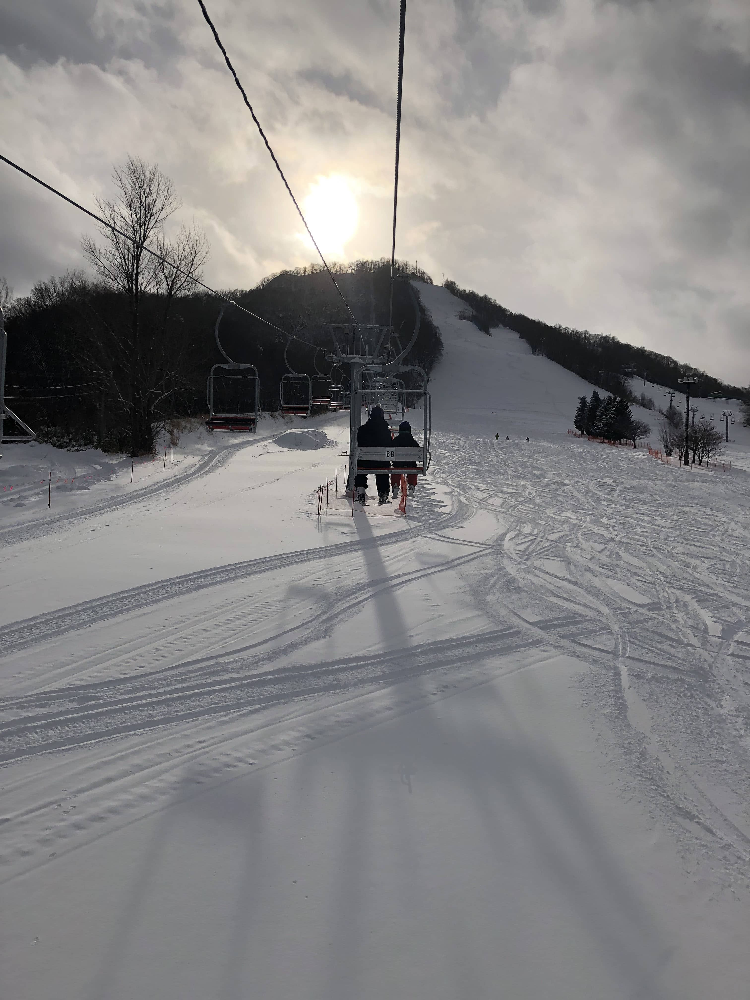
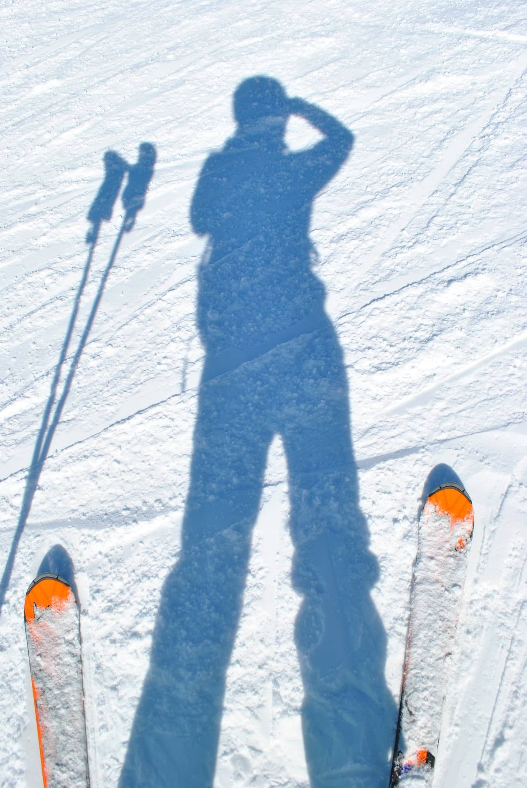
When you visit Hokkaido, Marusei butter sand in Rokkatei is one of the must try sweets. The sweets is always ranked top souvenir in Japan. You may also try pancakes and delicious fresh strawberry juice in café rooms.
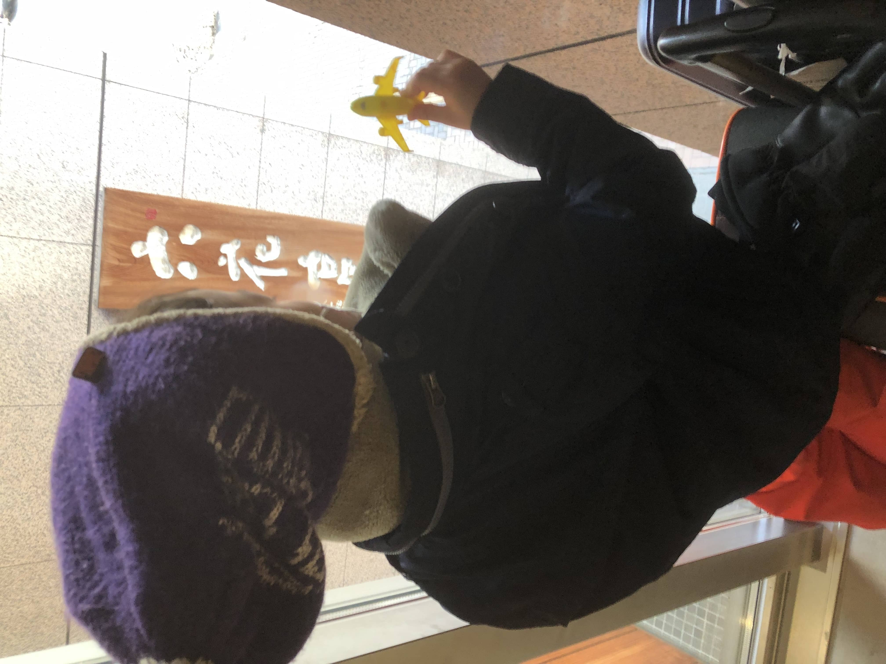

The history of Odori Park began in 1871 when it was constructed as a large-scale firebreak to separate the downtown area to the administrative district in the north and the residential and commercial district in the south. With its development promoted by the growth of the city, the park was later turned into a relaxing space for the citizens as well as a place for international exchange.
Odori Park is recognized both regionally and nationally as a site for major events in Sapporo such as the YOSAKOI Soran festival in early summer, the Beer Garden and the Summer Festival in summer, and the Snow Festival and the White Illumination in winter. When we visited in December, Oktoberfest was held at the site.

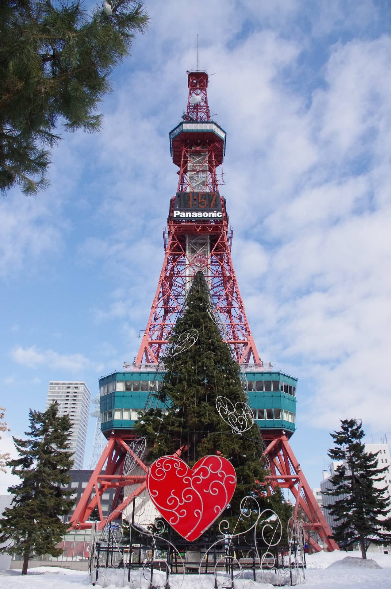
 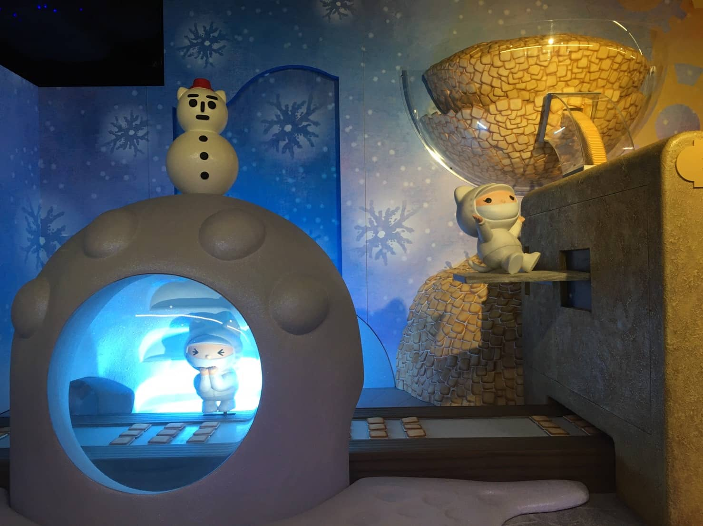
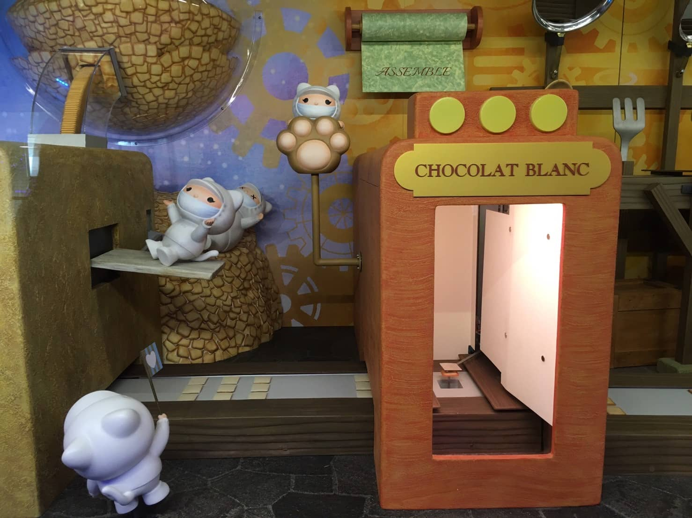
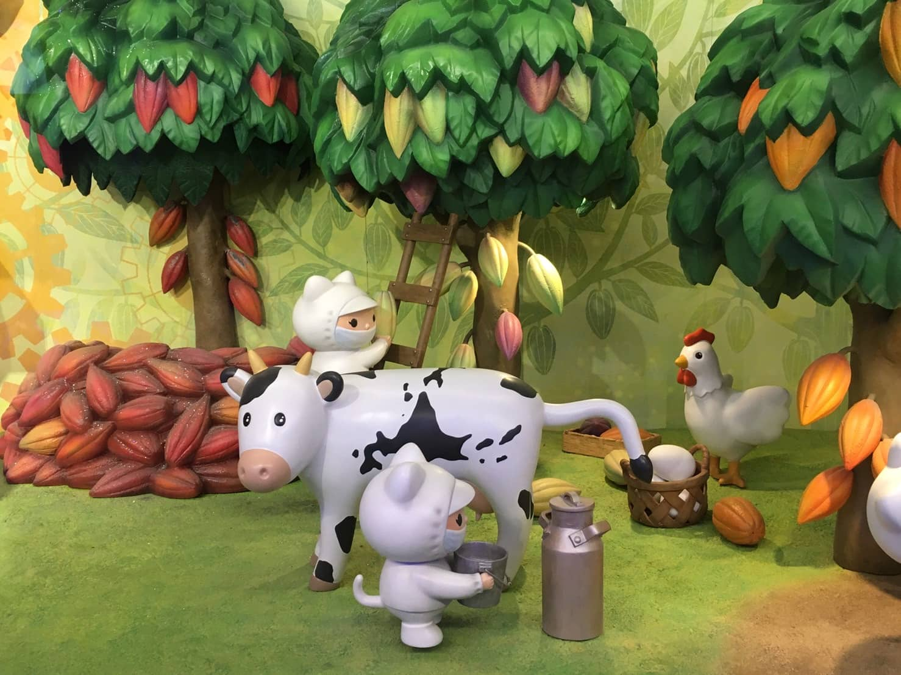
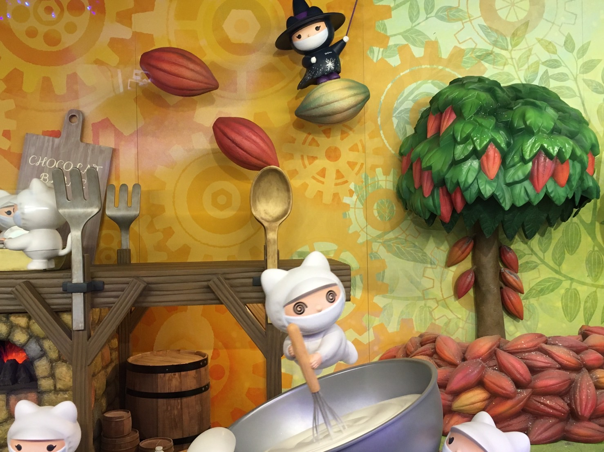
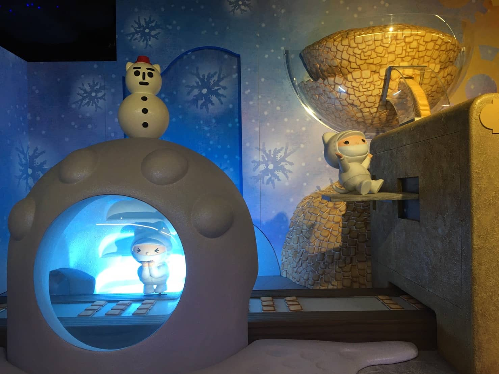
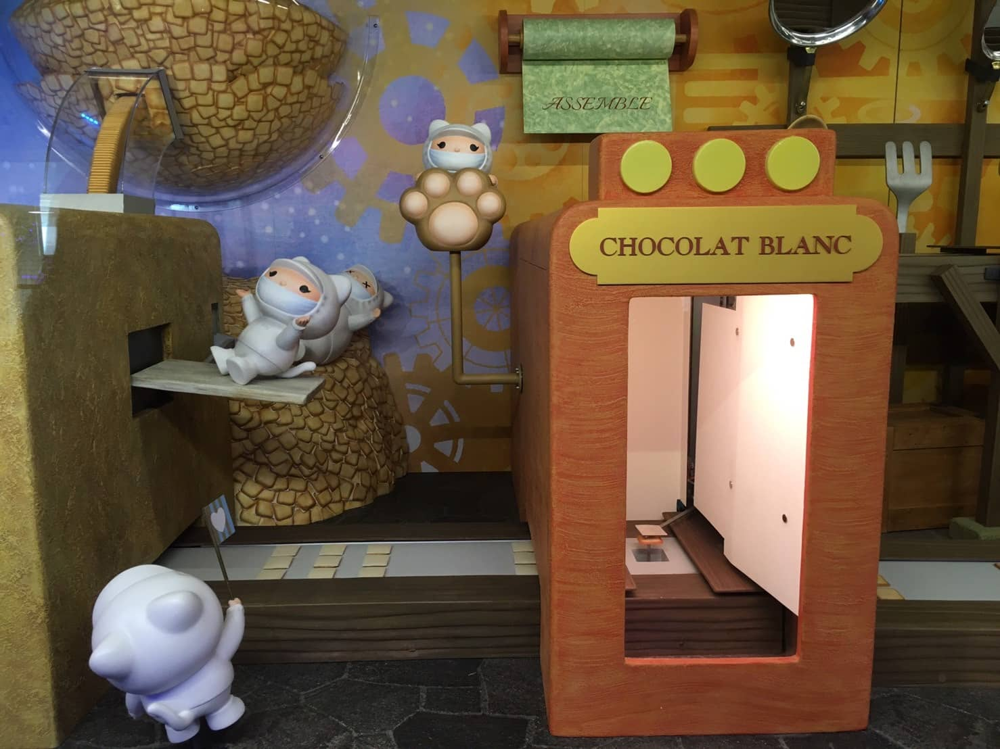
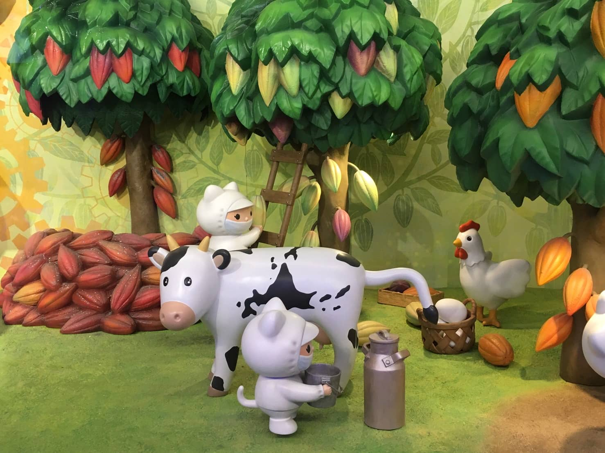
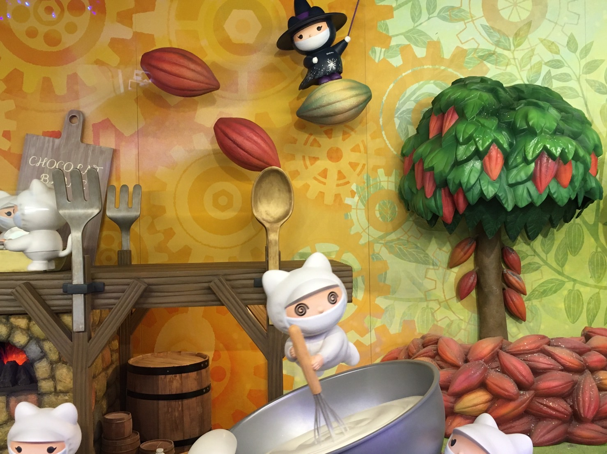